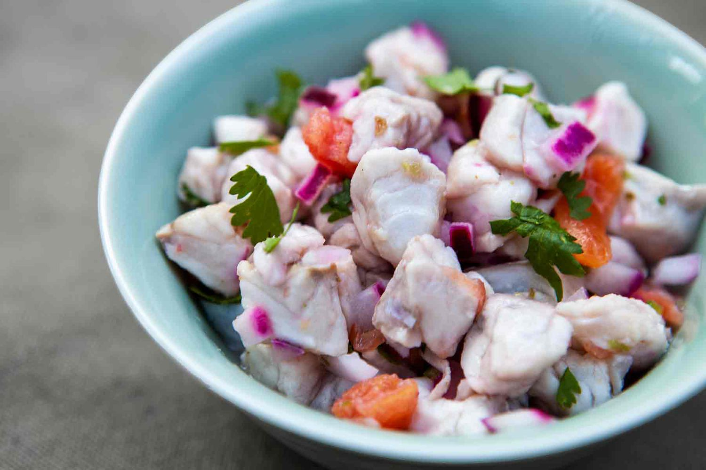

Master this peruvian delicacy

Ingredients
- 2 potatoes
- 2 sweet potatoes
- 1 red onion
- Fresh limes
- Cilantro leaves
- mince garlic
- Salt
- Lettuce
- Aji - or any habanero type pepper
Steps
- Place the potatoes and sweet potatoes in a saucepan and cover
with
water. Simmer until the potatoes are easily pierced with a fork,
then drain, and set aside to cool to room temperature. Place the
sliced onion in a bowl of warm water, let stand 10 minutes, then
drain and set aside.
- Meanwhile, place the lime juice, celery, cilantro, and cumin
into
the bowl of a blender, and puree until smooth. Pour this mixture
into a large glass bowl, and stir in the garlic and habanero
pepper.
Season with salt and pepper, then stir in the diced tilapia and
shrimp.
- Set aside to marinate for an hour, stirring occasionally. The
seafood is done once it turns firm and opaque.
- To serve, peel the potatoes and cut into slices. Stir the onions
into the fish mixture. Line serving bowls with lettuce leaves.
Spoon
the ceviche with its juice into the bowls and garnish with
slices of
potato.